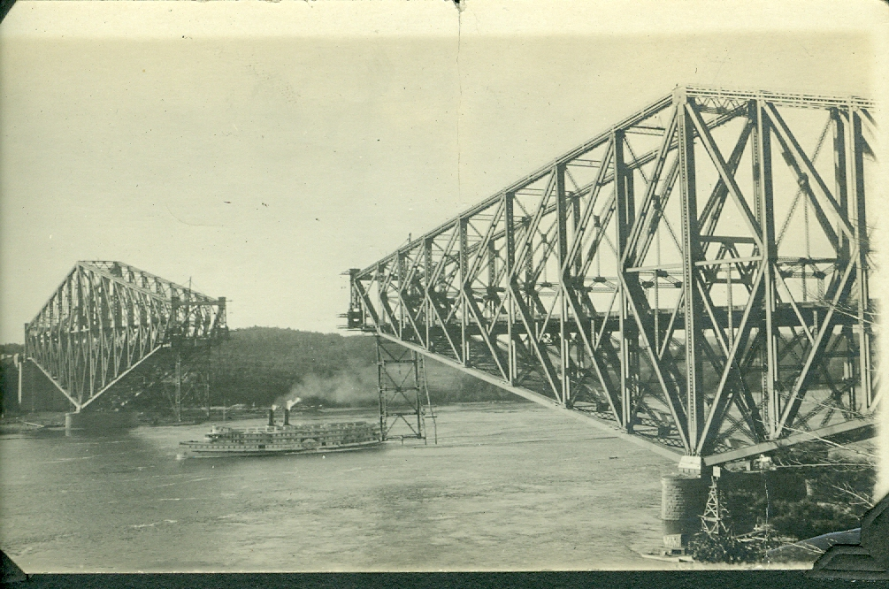

THE QUEBEC BRIDGE COLLAPSE
The Afternoon of August 29, 1907 Construction was nearly finished on the Quebec Bridge, intended to be the longest cantilever span in the world. For weeks, workers had noticed that some of the massive steel chords were already beginning to bend (buckle) under the weight of the structure. When the local engineer, Norman McLure, sent word to the project’s lead designer in New York, Theodore Cooper, the concerns were initially dismissed as "minor."

/>The tragedy struck at 5:32 PM. As the whistle blew to end the workday, the south arm of the bridge suddenly groaned and crumpled into the St. Lawrence River. In just 15 seconds, 19,000 tons of steel and 86 workers plummeted into the water. Only 11 survived. The cause was a fundamental error in the "Dead Load" calculation: Cooper, a famous but aging engineer who never actually visited the site during construction, had underestimated the bridge's own weight by 8 million pounds. The steel was literally crushed by its own ambition.
The Strategic Response: From Professional Shame to the Iron Ring The immediate strategy was Panic and Blame. A Royal Commission was formed, which concluded that the collapse was due to errors in judgment by the design engineers.
Key Facts
Date: August 29, 1907 (Initial collapse) & September 11, 1916 (Second collapse)
Location: St. Lawrence River, Quebec City, Canada
Casualties: 89 deaths (76 in 1907; 13 in 1916)
Cause: Engineering Egos and Structural Hubris (Calculation error in "Dead Load" weight and failure to heed warnings of buckling steel)
The Replacement Strategy: They tried again in 1916. During the hoisting of the new central span, a casting failed, and the bridge fell into the river a second time, killing 13 more people. The bridge was finally completed in 1917, but the strategy shifted from "Record-Breaking" to "Total Redundancy."
The Ritual of the Calling of an Engineer: In response to the tragedy, Canadian engineers created a unique strategy for professional accountability. Since 1922, graduating engineers have participated in a private ceremony where they receive an Iron Ring. Legend has it that the original rings were made from the scrap metal of the collapsed bridge to serve as a cold, permanent reminder on their drawing hand of the human cost of a math error.
The Peer Review Goal: This disaster changed the strategy of global infrastructure projects, making Independent Third-Party Review mandatory. No single "master engineer" was ever allowed to have total unchecked authority over a project again.